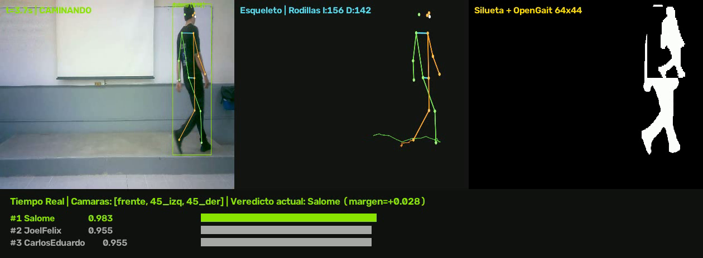
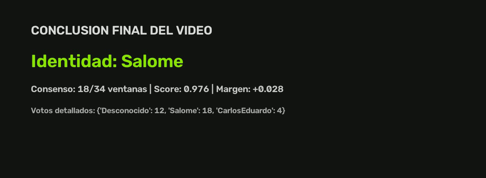

Reconocimiento Biométrico de Marcha Humana
Sistema multimodal inteligente basado en GaitBase_DA (ResNet9 + HPP) y cinemática de esqueleto 2D con YOLOv8 para la identificación de personas a distancia sin cooperación.
Enfoque Multimodal: Silueta + Esqueleto
No dependemos de una sola técnica. Combinamos la apariencia y volumen de la silueta exterior con la cinemática ósea profunda del esqueleto interno.
• Segmentación: YOLOv8-seg a nivel de píxel.
• Normalización: Estándar científico 64 × 44 píxeles alineado por centro de masa.
• Embedding: Vector profundo de 4096 dimensiones.
• Fortaleza: Captura contorno corporal, cadencia de balanceo y volumen de las extremidades.
• Keypoints: 17 puntos articulares COCO (hombros, caderas, rodillas, tobillos).
• Vector Cinemático: 99 dimensiones normalizadas por longitud del torso.
• Invarianza: Rango dinámico de rodillas, codos y zancada.
• Fortaleza: Inmune a ropa holgada, chamarras o variaciones de vestimenta.
Auditoría del Dataset Físico
Comprobación e indexación completa de las grabaciones de laboratorio de los alumnos del TECNM.
4.21 GB en almacenamiento
Catalogados en manifiesto
Sincronización en milisegundos
Prueba de 60 muestras con OpenCV
Alejandro (69 seq) AndreSamano (59 seq) BernardoBejarano (42 seq) BrunoLopez (42 seq) CarlosEduardo (42 seq) DanielOntiveros (36 seq) GabrielRoman (31 seq) JoelFelix (41 seq) Salome (42 seq)
✓ Cobertura en disco para los 9 sujetos: 100% de tomas encontradas e intactas en disco.
Pipeline de Procesamiento en 5 Fases
Flujo de datos desacoplado y reproducible contenido en la carpeta src/.
Resuelve aliases, sincroniza marcas temporales y divide en tomas 1-7 (Galería) y 8+ (Probe).
Detecta con velocidad horizontal (vx) cuándo la persona camina y recorta sincrónicamente las cámaras.
Segmenta con YOLOv8-seg, alinea por centro de masa y extrae los 17 puntos del esqueleto con YOLOv8-pose.
Genera vectores de 4096-D (silueta) y 99-D (esqueleto). Guarda gallery_db.pkl y evalúa Top-1 / Top-5.
Ventana deslizante de 60 cuadros, detector de pausas/giros en vivo, gráfico de barras con el Top-3 de sospechosos y tarjeta de conclusión final con filtro de desconocidos.
Fase 1: Recorte Inteligente de Pasadas
Eliminación matemática de tiempos muertos: los giros de 180° y las esperas en los extremos destruyen el patrón cíclico de marcha si no se filtran.
1. Seguimiento de Centroide: Obtiene la coordenada horizontal cx de la persona cuadro a cuadro con YOLO.
2. Filtro de Convolución: Suavizado cxsmooth = cx * [1/3, 1/3, 1/3] para eliminar ruido de detección.
3. Velocidad Instantánea: vx = Δcx / Δt.
4. Condición de Marcha Activa: |vx| ≥ 85 px/s de forma ininterrumpida durante ≥ 1.4 s.
• Cuando la cámara ancla detecta el intervalo activo [tinicio, tfin], el script consulta los archivos CSV de reloj maestro.
• Recorta exactamente los mismos milisegundos en las cámaras de frente, 45° izquierda y 45° derecha.
• Guarda las tomas limpias en dataset_trimmed/ listas para extraer siluetas sin basura de fondo ni pausas.
Fase 2: Siluetas 64×44 y Esqueleto Articular
Normalización espacial estricta según el estándar de la comunidad científica (CASIA-B / GREW).
• Escala isotrópica a altura fija de 64 px.
• Centro de masa horizontal x̄ alineado al centro del lienzo (x = 22).
• Invariante a la distancia del lente y al avance por el pasillo.
• Cabeza, hombros, codos, muñecas, caderas, rodillas y tobillos.
• Filtrado de confianza ≥ 0.45.
• Normalizado dividiendo las distancias entre la longitud del torso.
• Cálculo dinámico de flexión de rodilla con producto punto de vectores óseos.
• Estela temporal de tobillos (verde pie izquierdo, naranja pie derecho).
[Panel 1: Video Original + Esqueleto] | [Panel 2: Esqueleto Aislado + Estela de Pasos + Grados de Rodilla] | [Panel 3: Máscara Binaria + Miniatura 64×44 OpenGait]
GaitBase_DA y el Descriptor Biomecánico
Arquitectura convolucional con agrupación piramidal horizontal y representación matemática del paso.
• Backbone ResNet9: Canales convolucionales [64, 128, 256, 512].
• Temporal Pooling (TP): Comprime la secuencia temporal extrayendo las amplitudes máximas del paso.
• Horizontal Pooling Pyramid (HPP): Divide en 16 franjas horizontales independientes para analizar la anatomía por partes.
• Separate FCs: 16 × 256 ➔ 4096 dimensiones con norma L2.
• 34 dims: Posición promedio (x̂, ŷ) de los 17 puntos en el tiempo.
• 34 dims: Dispersión o desviación estándar de cada articulación.
• 24 dims: Estadísticas de 6 ángulos articulares (media, std, p10, p90).
• 7 dims: Geometría (ancho hombros, caderas, zancada máxima p95, piernas).
• Centrado en Galería: Se resta μgalería para aislar la singularidad individual.
Inferencia en Tiempo Real (Demo Generada)
Simulación generada por src/phase4_realtime_sim.py sobre una toma real del dataset (Salome / toma_01 / frente).



Métricas de Evaluación y Robustez
Capacidad de generalización ante cambios de perspectiva y rechazo certero de impostores.
• Top-1: El sujeto correcto aparece en el 1er lugar del ranking de similitud de cosenos.
• Top-5: El sujeto correcto se encuentra dentro de los primeros 5 candidatos más probables.
• Se evalúan tomas de 45° ocultando deliberadamente esa perspectiva en la galería.
• Comprueba la capacidad de la IA para reconocer al alumno desde un ángulo en el que nunca fue registrado.
• Umbral mínimo: Score ≥ 0.940.
• Margen de seguridad: Δ ≥ 0.015 respecto al segundo lugar.
• Evita falsos positivos ante personas externas al grupo.
Al terminar la reproducción, el sistema realiza una votación entre todas las ventanas evaluadas durante la caminata activa:
Votos: {'Desconocido': 16, 'Salome': 22} (22/38 ventanas válidas) ➔
Veredicto Concluyente: Salome (Score promedio: 0.984 | Margen: +0.028).
Estado del Avance y Trabajo Futuro
Balance de los logros completados a la fecha y ruta de trabajo para la entrega final.
1. Entorno y Dependencias: Python 3.11, PyTorch, YOLOv8 (pose/seg) y OpenGait totalmente instalados y operativos en .venv.
2. Dataset Validado: 618 videos y 604 timestamps auditados sin archivos corruptos.
3. Modelos Descargados: Pesos de GaitBase_DA (339 MB) y modelos base YOLO descargados localmente.
4. Pipeline de 5 Fases: Scripts desde Fase 0 hasta Fase 4 probados con éxito.
5. Simulación en Tiempo Real: HUD interactivo y renderizado de video demostrado.
1. Expansión de la Galería: Extraer características de las tomas de los 31 sujetos del manifiesto.
2. Matriz de Confusión Global: Generar gráficas de matriz de confusión y curvas ROC multi-sujeto.
3. Demostración con Cámara Web en Vivo: Conectar una cámara USB en el aula (--source frente=0) para reconocimiento en directo de los compañeros durante la exposición.
Preguntas Frecuentes del Jurado Evaluador
Guía rápida con las respuestas técnicas clave ante preguntas difíciles de los profesores.
classify_with_unknown: exige un score mínimo de 0.940 y un margen de separación de al menos 0.015 con el segundo lugar. Si un desconocido pasa frente a la cámara, el sistema reporta Desconocido en lugar de arriesgar una identidad falsa.